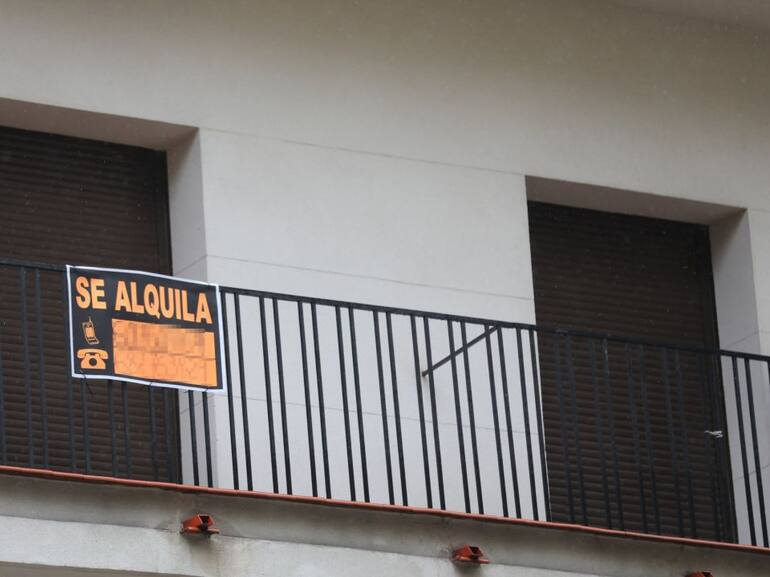

Vivienda
Vivir con dignidad: el lujo del siglo XXI
La vivienda ha dejado de ser solo un problema económico para convertirse en una fuente constante de angustia para miles de personas.
Por Manuel Brasaola · Secretario General de Juventudes Socialistas de Castro Urdiales
Leer tribuna